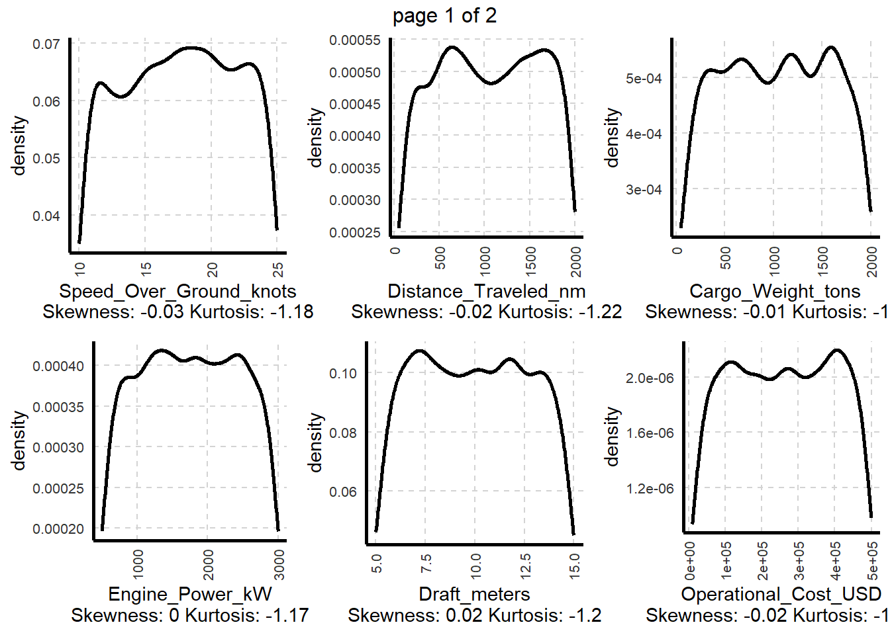
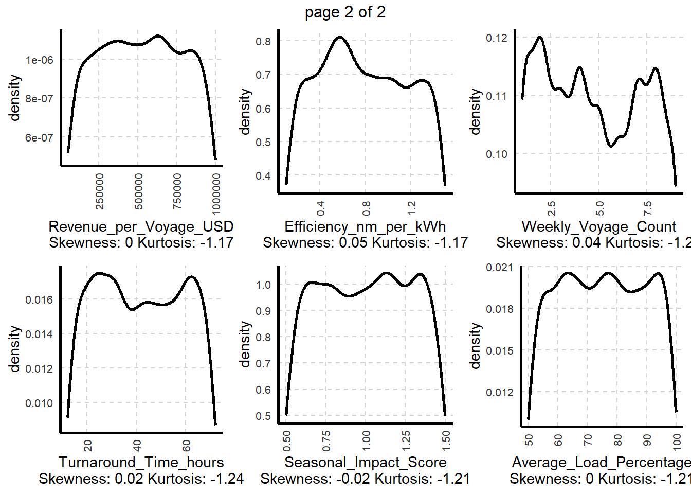
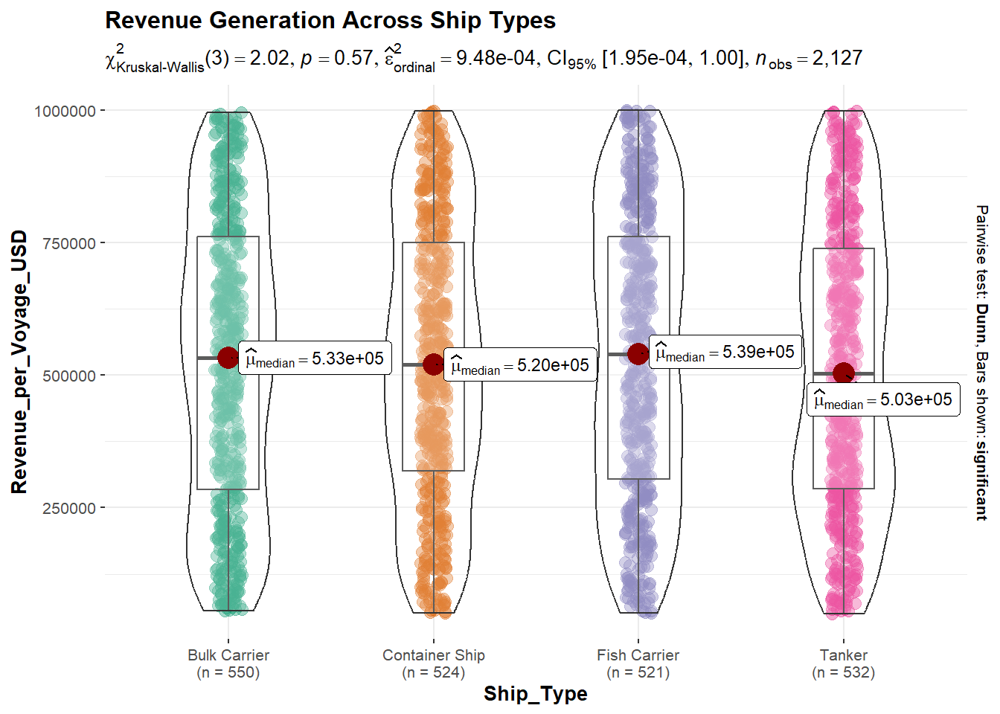
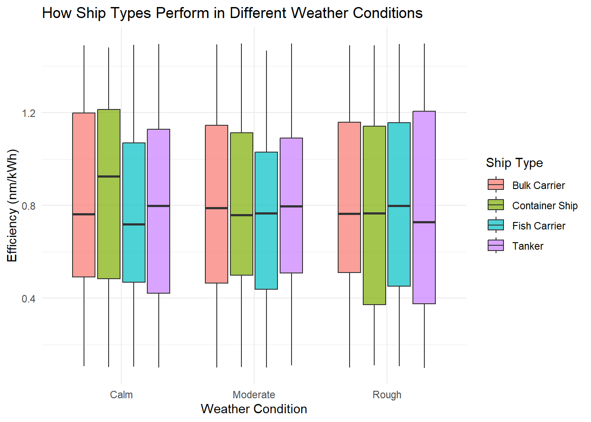
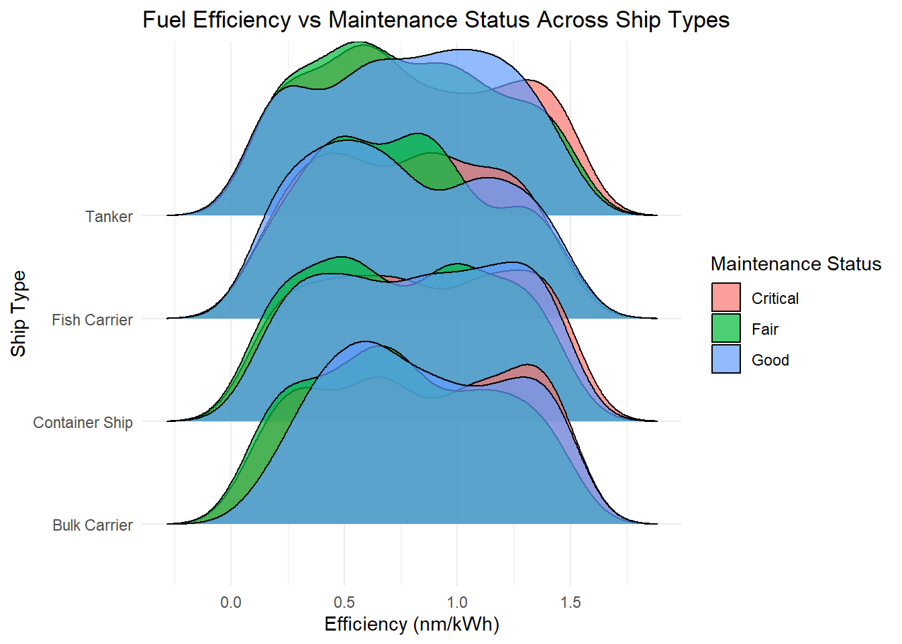
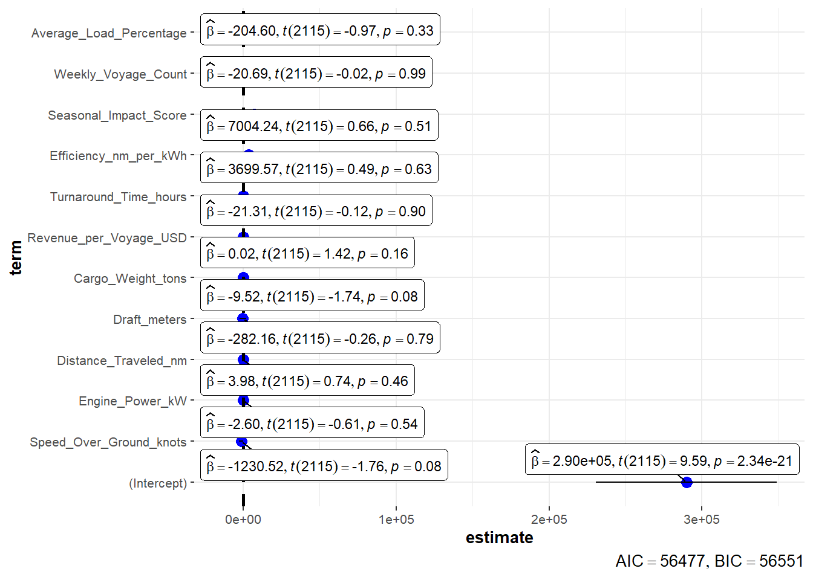

pacman::p_load(tidyverse, ggdist, ggridges, ggthemes, colorspace, gapminder,
plotly, gganimate, ggiraph, ggstatsplot, FunnelPlotR,
performance, parameters, see, lubridate, cluster, SmartEDA,
gtsummary)Take Home Exercise 1: Ship Performance in the Gulf of Guinea
Overview
The upcoming article, will explore key operational metrics and performance trends of various ship types navigating this crucial maritime region. Utilizing the Ship Performance Dataset - a synthetic yet realistic collection of ship performance data - the article will present insights into fuel efficiency, operational costs, and performance optimization. With data visualization playing a central role, the piece will highlight patterns and predictive analytics applications. By leveraging data-driven approaches, this analysis aims to enhance decision-making in the maritime sector, supporting economic growth and sustainability while addressing environmental concerns.
1. Getting Started
1.1 Install packages
1.2 Import data
Based on the dataset description provided on Kaggle, we can identify the key categorical variables that serve as critical indicators of ship performance:
Ship_TypeRoute_TypeEngine_TypeMaintenance_StatusWeather_Condition
Therefore, we will convert these to factor variables to extract meaningful insights.
cols <- c("Ship_Type", "Route_Type", "Engine_Type",
"Maintenance_Status", "Weather_Condition")
ship_data <- read_csv("Ship_Performance_Dataset.csv") %>%
mutate(across(all_of(cols), as.factor))1.3 Utilities
attach(ship_data)
theme_set(theme_minimal())2. Basic EDA
2.1 Data overview
The dataset consists of 2,736 observations with 18 key variables, covering a mix of numeric, categorical (factor), and date data types, all with zero missing values, ensuring a complete dataset for analysis.
ship_data %>% ExpData(type = 1) Descriptions Value
1 Sample size (nrow) 2736
2 No. of variables (ncol) 18
3 No. of numeric/interger variables 12
4 No. of factor variables 5
5 No. of text variables 0
6 No. of logical variables 0
7 No. of identifier variables 11
8 No. of date variables 1
9 No. of zero variance variables (uniform) 0
10 %. of variables having complete cases 100% (18)
11 %. of variables having >0% and <50% missing cases 0% (0)
12 %. of variables having >=50% and <90% missing cases 0% (0)
13 %. of variables having >=90% missing cases 0% (0)ship_data %>% ExpData(type = 2) Index Variable_Name Variable_Type Sample_n Missing_Count
1 1 Date Date 2736 0
2 2 Ship_Type factor 2736 0
3 3 Route_Type factor 2736 0
4 4 Engine_Type factor 2736 0
5 5 Maintenance_Status factor 2736 0
6 6 Speed_Over_Ground_knots numeric 2736 0
7 7 Engine_Power_kW numeric 2736 0
8 8 Distance_Traveled_nm numeric 2736 0
9 9 Draft_meters numeric 2736 0
10 10 Weather_Condition factor 2736 0
11 11 Cargo_Weight_tons numeric 2736 0
12 12 Operational_Cost_USD numeric 2736 0
13 13 Revenue_per_Voyage_USD numeric 2736 0
14 14 Turnaround_Time_hours numeric 2736 0
15 15 Efficiency_nm_per_kWh numeric 2736 0
16 16 Seasonal_Impact_Score numeric 2736 0
17 17 Weekly_Voyage_Count numeric 2736 0
18 18 Average_Load_Percentage numeric 2736 0
Per_of_Missing No_of_distinct_values
1 0 57
2 0 5
3 0 5
4 0 4
5 0 4
6 0 2736
7 0 2736
8 0 2736
9 0 2736
10 0 4
11 0 2736
12 0 2736
13 0 2736
14 0 2736
15 0 2736
16 0 2736
17 0 9
18 0 27362.2 Distribution of categorical variables
Next, we will analyze the contributing factors for each categorical variable and examine their respective distributions.
ship_data %>% ExpCTable(Target = NULL) Variable Valid Frequency Percent CumPercent
1 Ship_Type Bulk Carrier 669 24.45 24.45
2 Ship_Type Container Ship 635 23.21 47.66
3 Ship_Type Fish Carrier 653 23.87 71.53
4 Ship_Type None 136 4.97 76.50
5 Ship_Type Tanker 643 23.50 100.00
6 Ship_Type TOTAL 2736 NA NA
7 Route_Type Coastal 650 23.76 23.76
8 Route_Type Long-haul 686 25.07 48.83
9 Route_Type None 136 4.97 53.80
10 Route_Type Short-haul 626 22.88 76.68
11 Route_Type Transoceanic 638 23.32 100.00
12 Route_Type TOTAL 2736 NA NA
13 Engine_Type Diesel 892 32.60 32.60
14 Engine_Type Heavy Fuel Oil (HFO) 853 31.18 63.78
15 Engine_Type None 136 4.97 68.75
16 Engine_Type Steam Turbine 855 31.25 100.00
17 Engine_Type TOTAL 2736 NA NA
18 Maintenance_Status Critical 860 31.43 31.43
19 Maintenance_Status Fair 867 31.69 63.12
20 Maintenance_Status Good 873 31.91 95.03
21 Maintenance_Status None 136 4.97 100.00
22 Maintenance_Status TOTAL 2736 NA NA
23 Weather_Condition Calm 893 32.64 32.64
24 Weather_Condition Moderate 891 32.57 65.21
25 Weather_Condition None 136 4.97 70.18
26 Weather_Condition Rough 816 29.82 100.00
27 Weather_Condition TOTAL 2736 NA NA
28 Weekly_Voyage_Count 1 338 12.35 12.35
29 Weekly_Voyage_Count 2 311 11.37 23.72
30 Weekly_Voyage_Count 3 289 10.56 34.28
31 Weekly_Voyage_Count 4 316 11.55 45.83
32 Weekly_Voyage_Count 5 305 11.15 56.98
33 Weekly_Voyage_Count 6 283 10.34 67.32
34 Weekly_Voyage_Count 7 300 10.96 78.28
35 Weekly_Voyage_Count 8 313 11.44 89.72
36 Weekly_Voyage_Count 9 281 10.27 99.99
37 Weekly_Voyage_Count TOTAL 2736 NA NAThe presence of None suggests that certain entries may lack recorded information for a specific feature. In this case, we classify None as a missing value and exclude it from the analysis.
ship_data <- ship_data %>% filter(Weather_Condition != "None",
Ship_Type != "None",
Engine_Type != "None",
Maintenance_Status != "None",
Route_Type != "None")
Note
- The dataset has been reduced to 2,127 observations.
2.3 Distribution of numercial variables
ship_data %>% ExpNumViz(target = NULL,
Page = c(2,3))$`0`

Symmetric Distributions & Low Skewness:
Most variables have skewness values close to zero, meaning the distributions are well-balanced without significant left or right skew. The negative kurtosis value (~ -1.2) suggests a distribution that is flat than normal, indicating that data points are spread out.
Trends:
There is no clear noticeable trend. Cargo Weight and Operational Cost, and Average Load Percentage exhibit somewhat multimodal distributions, hinting at distinct ship categories or operational clusters. The Weekly Voyage Count shows a non-smooth density pattern, meaning that there are possible fluctuations in voyage frequency, possibly driven by external factors such as seasonality or ship availability.
3. Advanced Analysis
3.1 Identifying the Top Revenue-Generating Vessels
This analysis evaluates revenue per voyage across different ship types to determine which type generates the highest revenue.
Visualization
ggbetweenstats(data = ship_data,
x = Ship_Type,
y = Revenue_per_Voyage_USD,
type = "np",
mean.ci = TRUE) +
theme(legend.position = "none") +
labs(title = "Revenue Generation Across Ship Types")
Key Insights
Revenue Consistency Across Ship Types:
The high p-value indicates no significant difference in revenue per voyage across ship types, suggesting consistent earnings despite variations in operational and structural characteristics.
3.2 Ship Performance Across Weather Condition
Weather conditions significantly impact fuel efficiency and speed. Some ship types may be more resilient due to hull design, cargo weight, or engine power. This analysis examines how different ship types perform under varying weather conditions, focusing on efficiency (nm per kWh).
Visualization
ggplot(ship_data, aes(x = Weather_Condition, y = Efficiency_nm_per_kWh,
fill = Ship_Type)) +
geom_boxplot(alpha = 0.7) +
labs(title = "How Ship Types Perform in Different Weather Conditions",
x = "Weather Condition",
y = "Efficiency (nm/kWh)",
fill = "Ship Type")
Key insights
Effect of Weather on Efficiency:
Efficiency remains relatively stable across ship types despite worsening weather, likely due to adaptive navigation, robust hull designs, or engine optimizations. However, rough conditions introduce greater variability, as seen in the wider interquartile ranges and extended whiskers, indicating occasional efficiency fluctuations.
Ship Resilience & Potential Factors Influencing Efficiency:
Bulk Carriers and Tankers demonstrate stable efficiency across weather conditions, reflecting resilience to adverse environments. In contrast, Container Ships experience a notable efficiency drop in unfavorable weather, suggesting a greater sensitivity to external conditions, possibly due to hull design or operational constraints. Meanwhile, Fish Carriers, however, perform less efficiently in calm conditions, potentially due to engine performance, load distribution, or operational idling.
3.3 Impact of Maintenance Quality on Fuel Efficiency Across Ship Types
This analysis examines how maintenance status affects fuel efficiency (nm/kWh) across different ship types. The goal is to determine which ships experience the greatest efficiency losses due to poor maintenance, as this directly impacts fuel consumption, operational costs, and overall performance.
Visualization
ggplot(ship_data, aes(x = Efficiency_nm_per_kWh,
y = Ship_Type, fill = Maintenance_Status)) +
geom_density_ridges(alpha = 0.7) +
theme_minimal() +
labs(title = "Fuel Efficiency vs Maintenance Status Across Ship Types",
x = "Efficiency (nm/kWh)",
y = "Ship Type",
fill = "Maintenance Status")
Key Insights
Maintenance-Efficiency Relationship:
Ships are predominantly in Good condition (blue). As maintenance deteriorates to Fair (green), fuel efficiency declines, indicating potential performance losses due to mechanical wear or increased resistance. A notable insight is that ships in Critical condition (red) still exhibit high fuel efficiency, suggesting that these vessels may be operating under specific conditions, such as carrying lighter loads, undergoing urgent voyages, or employing short-term operational adjustments to compensate for mechanical inefficiencies.
Ship Types Most Affected by Poor Maintenance:
Bulk carriers and container ships experience the most significant efficiency losses as maintenance quality declines, likely due to their large size and high fuel consumption demands. In contrast, fish carriers and tankers exhibit a more gradual reduction in efficiency, suggesting greater resilience to maintenance fluctuations, potentially due to differences in operational design and load capacity.
3.4 Identifying the Most Cost-Effective Ship Types
This analysis examines the trade-off between fuel efficiency and operational costs across different ship types. The objective is to identify which ship types achieve the best balance between maximizing fuel efficiency and minimizing operational expenses, enabling cost-effective fleet management and operational decision-making.
Visualization
A daily summary for each ship type is computed to aggregate data, thereby enhancing visualization clarity and interpretability.
daily_summary_by_ship <- ship_data %>%
mutate(Date = floor_date(as.Date(Date), "day")) %>%
group_by(Ship_Type, Date) %>%
summarize(
Avg_Efficiency = mean(Efficiency_nm_per_kWh, na.rm = TRUE),
Total_Engine = sum(Engine_Power_kW, na.rm = TRUE),
Total_Revenue = sum(Revenue_per_Voyage_USD, na.rm = TRUE),
Total_Cost = sum(Operational_Cost_USD, na.rm = TRUE),
Total_Distance = sum(Distance_Traveled_nm, na.rm = TRUE)
) %>%
ungroup()p <- ggplot(daily_summary_by_ship,
aes(x = Total_Cost, y = Avg_Efficiency, color = Ship_Type)) +
geom_point(alpha = 0.7) +
theme_minimal() +
labs(title = "Trade-off Between Fuel Efficiency and Operational Cost",
x = "Operational Cost (USD)",
y = "Efficiency (nm/kWh)")
ggplotly(p) %>% layout(hovermode = "closest")Key Insights
Lack of a Clear Linear Relationship:
The scatter plot reveals no strong correlation between operational costs and fuel efficiency, indicating that higher expenditures do not necessarily result in better efficiency. Notably, some ships with lower operational costs achieve comparable or even superior fuel efficiency compared to higher-cost vessels.
Optimization Opportunities:
Certain tanker operations incur higher costs without significantly improving fuel efficiency, highlighting potential areas for cost reduction strategies. Conversely, some bulk carrier operations demonstrate low-cost, high-efficiency performance, suggesting good resource allocation optimization.
3.5 Route Optimization for Maximum Revenue
This analysis examines the relationship between distance traveled and revenue per voyage across different route categories. Understanding which routes yield the best revenue enables optimized fleet allocation and cost-effective route planning. Focusing on high-yield routes while balancing operational costs ensures sustainable profitability in maritime logistics.
Visualization
A daily summary for each route is computed to aggregate data, thereby enhancing visualization clarity and interpretability.
daily_summary_by_route <- ship_data %>%
mutate(Date = floor_date(as.Date(Date), "day")) %>%
group_by(Route_Type, Date) %>%
summarize(
Avg_Efficiency = mean(Efficiency_nm_per_kWh, na.rm = TRUE),
Total_Revenue = sum(Revenue_per_Voyage_USD, na.rm = TRUE),
Total_Cost = sum(Operational_Cost_USD, na.rm = TRUE),
Total_Distance = sum(Distance_Traveled_nm, na.rm = TRUE)
) %>%
ungroup()p <- ggplot(daily_summary_by_route, aes(
x = Total_Distance,
y = Total_Revenue,
size = Total_Cost,
color = Route_Type,
text = paste(
"Route Type:", Route_Type, "<br>",
"Total Distance:", round(Total_Distance, 2), "nm", "<br>",
"Total Revenue: $", format(Total_Revenue, big.mark = ","), "<br>",
"Total Cost: $", format(Total_Cost, big.mark = ",")
)
)) +
geom_point(alpha = 0.7) +
labs(
title = "Trade-Off: Distance vs Revenue vs Cost",
x = "Distance Traveled (nm)",
y = "Revenue per Voyage (USD)",
size = NULL,
color = NULL
)
ggplotly(p, tooltip = "text")%>% layout(hovermode = "closest")Key insights
Distance-Revenue Relationship:
Revenue per voyage increases with distance, with transoceanic and long-haul routes generating the highest returns, while coastal and short-haul routes yield lower revenue. This suggests that longer voyages offer greater financial returns, likely due to larger cargo volumes and higher freight rates.
Variability in Revenue Efficiency:
Some shorter routes (such as Short-haul and Coastal) show similar revenue levels as longer voyages, suggesting that certain regional or high-demand routes may be particularly profitable. Transoceanic routes have the highest revenue variance, suggesting that profitability is influenced by multiple factors such as cargo type, fuel costs, and market demand fluctuations.
Optimizing Fleet Utilization:
Medium to long-haul routes appear to strike an optimal balance between distance and revenue, making them ideal for fleet efficiency. While revenue increases with distance, operational costs remain relatively stable, suggesting that cost management is effectively maintained across various voyage lengths.
4. Predictive Models
4.1 Predicting Operational Costs Using Regression
This analysis applies a linear regression model to assess whether a ship’s operational cost can be predicted based on numerical attributes. Understanding these relationships can help in cost forecasting, budget planning, and operational optimization.
Visualization
cost_model <- lm(Operational_Cost_USD ~ Speed_Over_Ground_knots +
Engine_Power_kW + Distance_Traveled_nm + Draft_meters +
Cargo_Weight_tons + Revenue_per_Voyage_USD +
Turnaround_Time_hours + Efficiency_nm_per_kWh +
Seasonal_Impact_Score + Weekly_Voyage_Count +
Average_Load_Percentage,
data = ship_data)ggcoefstats(cost_model, output = "plot")
Key Insights
Limited Predictive Power of Variables:
Most predictors have p-values above 0.05, indicating weak statistical significance and suggesting they do not strongly influence operational costs in this model.
Potentially Influential Factors:
Cargo Weight (p = 0.08) and Speed Over Ground (p = 0.08) show marginal significance, implying they may have some impact on operational costs.
Strategic Implications:
- Enhancing the model with additional factors such as fuel price fluctuations, maintenance records, and crew costs may improve predictive accuracy.
- A non-linear or interaction-based approach may be more suitable for cost forecasting in the maritime industry than a simple linear regression model.